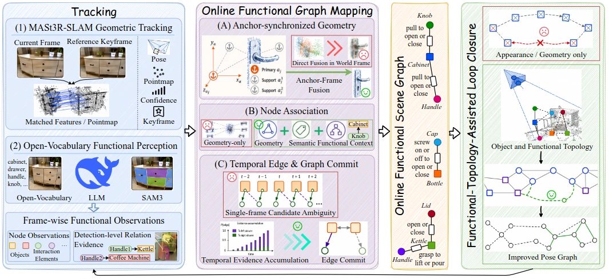

앵커 키프레임
노드의 3D 형상을 앵커 키프레임 좌표에 저장합니다. 앵커를 고를 때 경계 잘림, 검출·기하 신뢰도, 보이는 면적과 3D 점 수를 봅니다. 다른 프레임과는 중심·크기·범위를 비교합니다. 논문 3.3절
월드 좌표에 고정
앵커 키프레임에 고정
Interaction-Aware Mapping with Online Functional Scene Graphs
CoRL 2026
Functional-SLAM은 RGB 영상으로 3D 지도를 만들면서 손잡이 같은 조작 부위와 그 대상을 연결합니다. 이 관계는 카메라가 이전에 방문한 장소를 찾는 데도 쓰입니다.
FunGraph3D의 주방 영상 한 구간을 GPT-6 Luna와 DeepSeek V4.1 Flash로 각각 실행해 기능 그래프와 카메라 궤적을 비교했습니다.
재현 결과 보기재현에 사용한 시퀀스는 FunGraph3D 0kitchen/video0입니다.
| 지표 | 논문 보고 | GPT-6 Luna | DeepSeek V4.1 Flash |
|---|---|---|---|
| 처리 속도 (FPS) | 0.38 | — | — |
| 노드 Recall@3 (%) | 64.55 | — | — |
| ATE RMSE (mm) | 16.5 | — | — |
논문의 Recall과 ATE는 FunGraph3D 18개 시퀀스 기준이며, FPS는 RTX 3090에서 측정했습니다. 논문 표 3·4
비교 데이터를 불러오는 중입니다.
실행 기록을 불러오는 중입니다.
노드나 연결선을 선택하면 관측 사진과 관계의 근거를 볼 수 있습니다.
3D 지도를 불러오는 중입니다.
드래그로 회전 · 오른쪽 드래그로 이동 · 휠로 확대
RAM++ 태그. 초록색은 탐색 대상과 이름이 같은 태그입니다.
Shift와 드래그로 이동할 수 있습니다. 점을 두 번 눌러 회전 중심을 바꾸고, 노드를 두 번 눌러 확대합니다.
로컬 연결은 부위에서 상위 대상으로 향합니다. 원격 연결은 내보낸 그래프의 방향을 따르며, 관계 원문과 방향이 다를 수 있습니다.
카메라 자세가 보정되면 지도 위의 부품 위치도 다시 계산해야 합니다. 가려진 손잡이가 어느 문에 속하는지는 한 프레임만 보고 판단하기 어렵습니다.
MASt3R-SLAM이 카메라 자세를 추정합니다. RAM++가 영상 태그를 만들고, 언어 모델이 고른 대상을 SAM3가 분할합니다.

노드의 3D 형상을 앵커 키프레임 좌표에 저장합니다. 앵커를 고를 때 경계 잘림, 검출·기하 신뢰도, 보이는 면적과 3D 점 수를 봅니다. 다른 프레임과는 중심·크기·범위를 비교합니다. 논문 3.3절
월드 좌표에 고정
앵커 키프레임에 고정
같은 역할의 노드끼리 위치, 이름, 부품이 속한 물체를 비교합니다. 헝가리안 알고리즘으로 일대일 대응을 구합니다. 짝이 없는 관측은 후보 노드로 남깁니다.
마스크 포함 비율에 두 검출 신뢰도의 최솟값을 곱해 관측 점수를 구합니다. 기능 맥락이 다르면 0점입니다. 새 관측을 더할 때마다 기존 점수는 0.95배로 줄입니다.
누적 1위가 아래 여섯 조건을 모두 만족하면 관계가 확정됩니다. 데모의 계산은 공식 코드의 LocalParentPosterior와 무작위 입력 3,920회에서 일치했습니다.
각 프레임의 관측을 바꾸면 손잡이가 어느 문에 연결되는지 확인할 수 있습니다.
각 노드와 가까운 이웃 두 개로 삼각형을 만듭니다. 키프레임 사이의 노드 역할·이름, 변 길이 비율, 기능 연결을 비교해 영상 검색에 후보를 보탭니다. 기하 검증을 통과한 후보로 카메라 자세를 보정합니다. 논문 3.4절
논문에서 FunGraph3D 18개 시퀀스를 평가한 결과입니다. 논문 표 3
| 설정 | 노드 R@3 (%) | 삼중항 R@5 (%) | ATE RMSE (mm) |
|---|---|---|---|
| 전체 모델 | 64.55 | 41.10 | 16.5 |
| 노드 안정화 제거 | 52.11 | 25.68 | 19.0 |
| 시간적 관계 누적 제거 | 64.08 | 31.51 | 17.9 |
| 기능 루프 제거 | 61.74 | 35.96 | 19.7 |
노드 안정화에는 앵커 키프레임과 기능 맥락을 활용한 노드 연관이 포함됩니다. R은 재현율, ATE는 궤적 오차입니다.
Functional-SLAM의 추정 자세를 모든 방법에 넣었습니다. 회색 숫자는 오프라인 방법에 정답 자세를 넣었을 때의 값입니다. 논문 4절
| 방법 | 노드 R@3 | 노드 R@10 | 삼중항 R@5 | 삼중항 R@10 | FPS |
|---|---|---|---|---|---|
| OpenFunGraph | 34.04 46.71 | 38.97 51.64 | 11.64 17.81 | 25.68 38.36 | 0.02 |
| FunGraph | 39.44 52.11 | 42.25 54.46 | 27.05 40.41 | 27.74 40.75 | 0.06 |
| KeySG | 25.12 36.62 | 29.34 40.61 | 4.45 13.01 | 7.19 14.38 | 0.05 |
| Functional-SLAM | 64.55 | 67.14 | 41.10 | 43.84 | 0.38 |
| 방법 | 노드 R@3 | 노드 R@10 | 삼중항 R@5 | 삼중항 R@10 |
|---|---|---|---|---|
| OpenFunGraph | 19.12 50.16 | 21.00 54.23 | 3.51 14.47 | 7.46 28.07 |
| FunGraph | 19.75 57.37 | 21.00 60.82 | 7.02 15.79 | 7.46 17.11 |
| KeySG | 15.36 46.08 | 16.30 47.34 | 1.32 15.35 | 1.32 15.35 |
| Functional-SLAM | 25.39 | 26.33 | 9.65 | 10.09 |
FunGraph3D에서 ATE RMSE는 MASt3R-SLAM 19.7 mm에서 16.5 mm로 줄었습니다. SceneFun3D에서는 33.25 mm로 기준 방법과 비슷했습니다.
저장소 루트에서 입력과 가중치를 준비합니다.
bash scripts/checkout.sh
python3 -B scripts/fetch_inputs.py
hf auth login
python3 -B scripts/fetch_functional.py
bash docker/build.sh실행을 마친 뒤 사이트 데이터와 데모 영상을 내보냅니다.
bash docker/run.sh luna
python3 -B scripts/evaluate_sequence.py .work/run/luna/result/rgb_SLAM.txt --output .work/run/luna/accuracy.json
python3 -B scripts/export_site.py --run .work/run/luna
python3 -B scripts/export_demo.pyNVIDIA GPU, Docker, NVIDIA Container Toolkit, SAM3 접근 권한이 필요합니다. 영상 내보내기에는 Pillow와 FFmpeg를 사용합니다.
gpt-6-luna를 low 설정으로 호출합니다. 키가 환경 변수에 없으면 입력 프롬프트가 열립니다.
기본 출력 경로는 .work/run/luna입니다. 새 경로에서 빈 캐시로 시작하며 RAM++는 CPU에서 실행합니다.
사이트는 docker compose up -d web 실행 후 http://127.0.0.1:8188에서 열립니다.
공통 준비를 마친 뒤 실행합니다. CPU에서 Qwen2.5-7B-Instruct를 구동하고 캐시를 재사용합니다. .work/run/functional에 결과를 저장하고 사이트 데이터를 갱신합니다.
python3 -B scripts/fetch_llm.py
bash docker/build_llama_cpu.sh
bash scripts/run_functional_local.sh@misc{hu2026functionalslam,
title = {{Functional-SLAM}: Interaction-Aware Mapping with Online Functional Scene Graphs},
author = {Hu, Xinggang and Zhang, Chenyangguang and Zhu, Zihan and Zhang, Ruida and Zhang, Xiangkui and Ji, Xiangyang},
year = {2026},
eprint = {2609.07497},
archivePrefix = {arXiv},
primaryClass = {cs.RO},
url = {https://arxiv.org/abs/2609.07497}
}